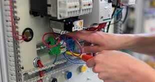
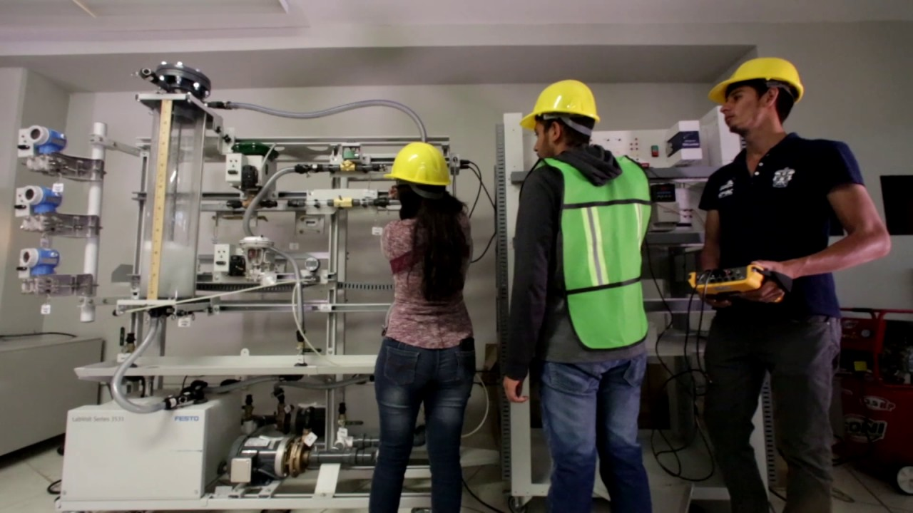

Integral Workers
Tecnico Electricista
- Asegurar el cumplimiento de la programación del mantenimiento preventivo del sistema eléctrico.
- Cumplir con el listado de actividades eléctricas asignadas.
- Brindar un estatus de las actividades realizadas en el día.
- Completar y reportar mantenimiento correctivo y reactivos ajustados.
- Realizar mantenimientos asignados.
Conocimiento Técnicos:
- Lectura de parámetros de medición eléctrica.
- Mantenimiento de instalaciones eléctricas de baja tensión.
- Conocimiento de simbología eléctrica.
- Lectura e interpretación de cuadros de carga.
- Lectura de planos eléctricos.
- Uso de herramientas manuales e instrumentos de medición de parámetros eléctricos (V - A - Ohm)
Acceder

Corporación Multi Inversiones
Mecánico electricista
* Diseñar, Revisar y dar seguimiento a la documentación del área de hidrología-hidráulica en proyectos de diseño y construcción de obras civiles y viales.
Desarrollaras actividades programadas de mantenimiento preventivo, correctivo y predictivo. Adicionalmente ejecutaras rutinas de limpieza, inspección, lubricación, ajuste/apriete y restauraciones.
Competencias:
•
-Conocimiento de mecánica Industrial.
-Conocimiento de electricidad general.
-Lectura de diagramas eléctricos.
-Conocimiento de calderas de vapor.
-Conocimiento de soldadura, TIG, MIG, automatización de procesos, bombas, válvulas, hidráulica y neumática.
• Elaborar condiciones técnicas del área de hidrología e hidráulica para las bases de la licitación de proyectos.
• Elaborar diseños referenciales y finales de las diversas obras hidráulicas requeridas en un proyecto de carácter vial y civil y así contar con una base para la realización de éstos.
Acceder